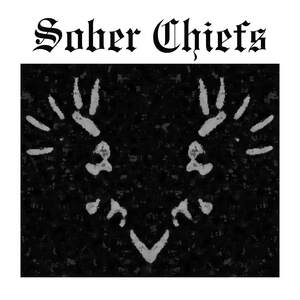

Trade Mark Journal No.2025/046 14 November 2025
UK00004287756 1 November 2025 (25,35,41)

- Class 25
- T-shirts; Tee-shirts; Shirts; Printed t-shirts; Wristbands [clothing].
- Class 35
- Online retail services for downloadable and pre-recorded music and movies; Promotion of musical concerts; Promotion [advertising] of concerts; Display services for merchandise; Promoting the sale of fashion goods through promotional articles in magazines; Sales promotions at point of purchase or sale, for others; Advertising services to promote the sale of beverages; Inventorying merchandise; Merchandising; Product merchandising; Publicity and sales promotion; Promoting the sale of goods and services of others through the distribution of printed material and promotional contests; Advertising and promotional services; Promotional and advertising services; Promotional advertising services; Advertising, promotional and marketing services; Advertising, marketing and promotional services; Marketing, advertising, and promotional services; Fashion show exhibitions for commercial purposes; Product merchandising for others; Fashion shows for promotional purposes (Organization of -); Organization of fashion shows for promotional purposes; Online retail store services relating to clothing; Modeling for advertising or sales promotion; Online advertising; Business merchandising display services; Promotion [advertising] of travel; Merchandizing; Advertising and promotion services; Design of advertising logos.
- Class 41
- Music concerts; Recording of music; Music recording; Music publishing and music recording services; Music performances; Production of music concerts; Music education; Presentation of music concerts; Live music concerts; Production of music; Music production; Music concert services; Music publishing; Publishing of music; Performance of music and singing; Music festival services; Performing of music and singing; Performance of dance, music and drama; Live music performances; Music entertainment services; Publication of music; Arranging of music performances; Music composition services; Direction of music performances; Music composition for others; Music recording studio services; Live music services; Rental of phonographic and music recordings; Production of music shows; Live music shows; Artistic management of music venues; Arranging of music shows; Music cassettes (Rental of -); Music group services.
Y ME Clothing LTD